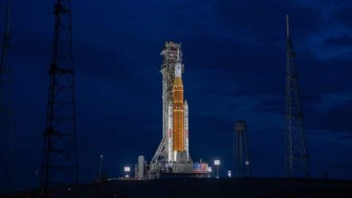
Космонавтика
13.03.2026
В НАСА затруднились назвать точные цифры риска для экипажа лунной миссии «Артемида-2»
НАСА испытывает трудности с количественной оценкой рисков для экипажа миссии «Артемида-2», запуск которой запланирован на апрель. В ходе пресс-брифинга, состоявшегося…
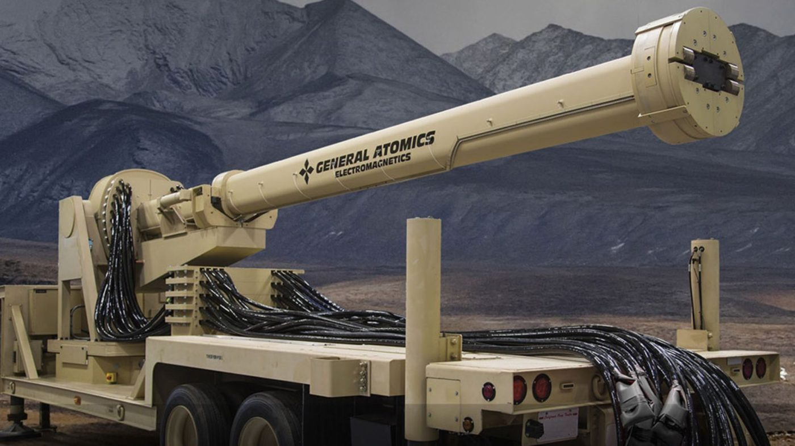
Технологии
13.03.2026
США возобновили испытания электромагнитной рельсовой пушки в рамках исследований гиперзвукового оружия
Военно-морские силы США возобновили испытания прототипа электромагнитной рельсовой пушки. Стрельбы прошли на ракетном полигоне Уайт-Сэндс в Нью-Мексико, что...
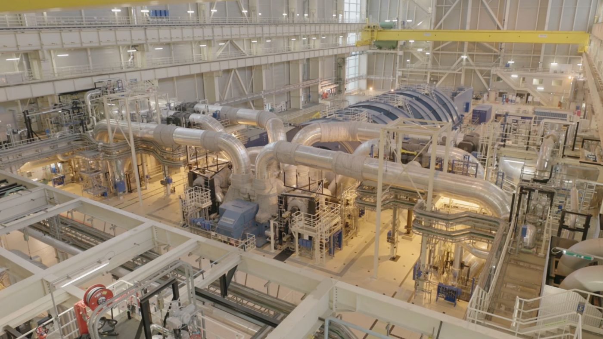
Химия
13.03.2026
Индийские ученые создали радиационно-стойкий цемент для более безопасных АЭС
Ученые из Индийского технологического института Гувахати разработали инновационный метод создания более прочного и долговечного цементного раствора, способного эффективно...
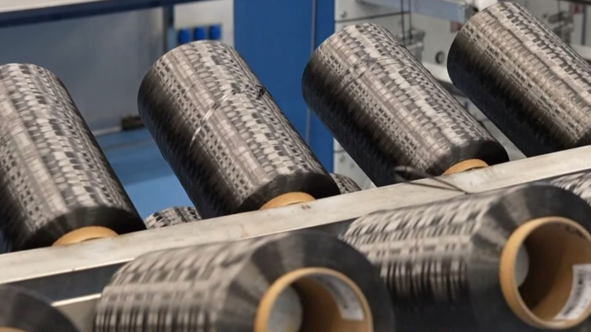
Химия
12.03.2026
Китай впервые в мире наладил массовый выпуск сверхпрочного углеродного волокна марки T1200
Китайская государственная корпорация China National Building Material Group (CNBM) объявила о прорыве в области материаловедения: страна стала первой, кто запустил…
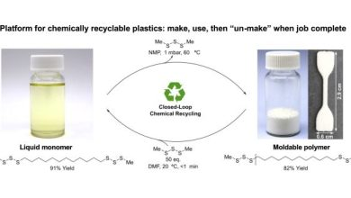
Химия
12.03.2026
Ученые совершили крупное открытие, обнаружив новый тип химической реакции с участием серы
Международная исследовательская группа объявила о настоящем прорыве в химии: ученые открыли ранее неизвестный тип реакции обмена серо-серных связей. Это открытие,…
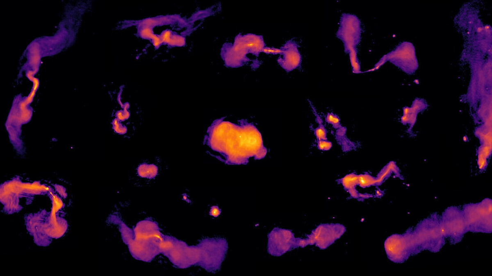
Астрономия
12.03.2026
Астрономы представили крупнейшую радиокарту неба, обнаружив почти 14 миллионов скрытых объектов
Международная группа астрономов опубликовала данные крупнейшего на сегодняшний день обзора неба в радиодиапазоне. Третий релиз данных обзора LOFAR...
Медицина
11.03.2026
Мозг мыши вернулся к жизни после глубокой заморозки впервые в истории
Группе исследователей из Университета Фридриха-Александра в Эрлангене и Нюрнберге (Германия) впервые в истории удалось восстановить функциональную активность ткани взрослого...
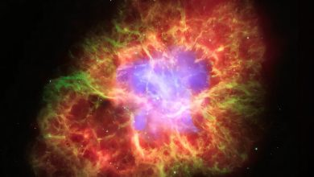
Астрономия
11.03.2026
Искусственный интеллект ускоряет изучение ядерных сил с помощью данных о взрывах нейтронных звезд
Исследовательская группа из Лос-Аламосской национальной лаборатории и Технического университета Дармштадта совершила прорыв в понимании ядерных сил, применив...
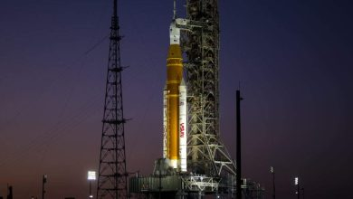
Космонавтика
11.03.2026
NASA подтвердило готовность миссии «Артемида II»к запуску 1 апреля
NASA объявило 12 марта об успешном завершении ключевого этапа подготовки к исторической миссии «Артемида II». Специалисты агентства провели финальную проверку…
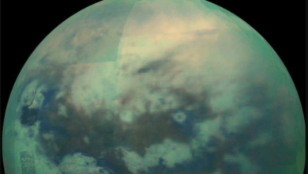
Планетология
11.03.2026
Лабораторные тесты опровергли возможность формирования стабильных клеток в метановых морях спутника Сатурна
Эксперименты, финансируемые Лабораторией реактивного движения NASA, поставили под сомнение теорию о том, что замерзшие углеводородные моря и озера крупнейшего...
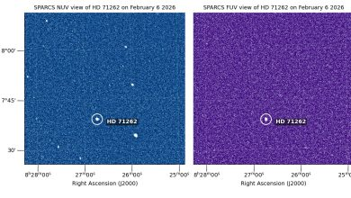
Астрономия
11.03.2026
Наноспутник NASA сделал первые ультрафиолетовые снимки звезд в поисках обитаемых миров
Команда миссии NASA Star-Planet Activity Research CubeSat (SPARCS) получила первые снимки со своего компактного спутника, ознаменовав переход к полноценной научной…
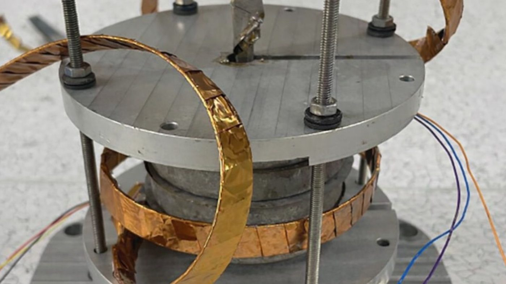
Физика
10.03.2026
Швейцарские ученые создали магнитом мощностью 42 тесла размером с ладонь
Исследователи из Швейцарской высшей технической школы Цюриха (ETH Zürich) совершили прорыв в области физики высоких магнитных полей, создав самый мощный…
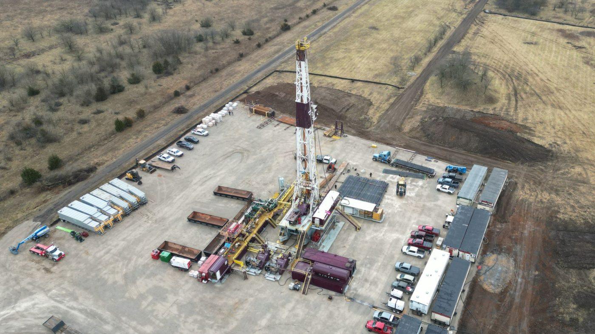
Технологии
10.03.2026
Калифорнийский стартап начал бурение первой скважины для размещения ядерного реактора на глубине более 1,6 километра
Калифорнийский стартап Deep Fission приступил к бурению первой скважины для подземного размещения своего инновационного ядерного реактора «Gravity», что знаменует...
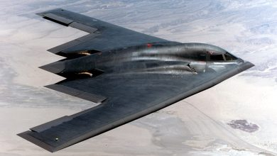
ИИ
10.03.2026
Искусственный интеллект помог китайским военным раскрыть присутствие невидимых самолетов США в Иране
Китайская частная оборонная компания Jingan Technology, занимающаяся сбором разведывательных данных для Народно-освободительной армии Китая (НОАК), заявила об успешном...
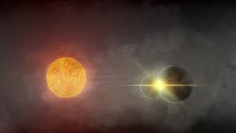
Астрономия
09.03.2026
Астрономы впервые стали свидетелями гигантского столкновения двух планет в далекой звездной системе
Астрономы впервые в истории получили возможность наблюдать за последствиями грандиозного столкновения двух экзопланет в реальном времени. Открытие было сделано благодаря…
Биология
09.03.2026
Учёные раскрыли новую анатомическую тайну приземления кошек на лапы
Японские ученые раскрыли новую анатомическую деталь, объясняющую, как кошкам всегда удается приземляться на лапы. На протяжении более ста лет физики…
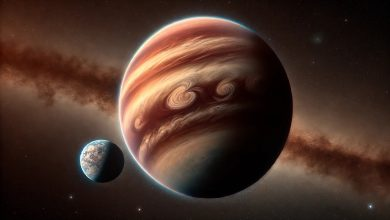
Космонавтика
08.03.2026
Ученые выяснили, что водородные оболочки делают спутники планет-изгоев пригодными для жизни
Исследовательская группа из кластера передовых исследований ORIGINS при Мюнхенском университете Людвига-Максимилиана и Института внеземной физики Общества...